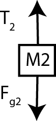

edX
WitsX Introduction to Physics
Problems: Pulleys
Walkthrough Problem Part E [Solution]
Consider the rope around the massless, frictionless pulley shown below. How much mass must M2 have in order for M1, with mass 14kg, to move upwards at an acceleration of 3.2 m/s2?

e. We must determine the magnitude of the gravitational force needed in order for M2 to move down. Therefore, the gravitational force must be greater than the tension in order for the block to move down. What is the tension in the rope, T2?

Answer: T2 = 182 N
In the ideal case of a massless, frictionless pulley, the tension is equally distributed throughout the rope, and is thus equal on both sides, meaning T2 = T1 = 182 N.